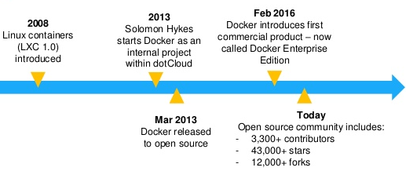
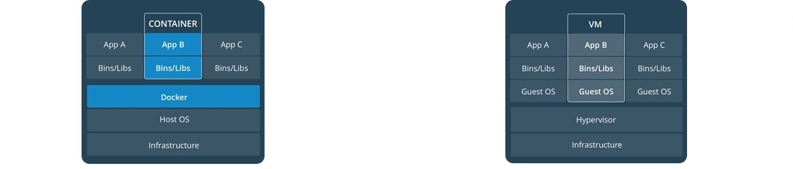
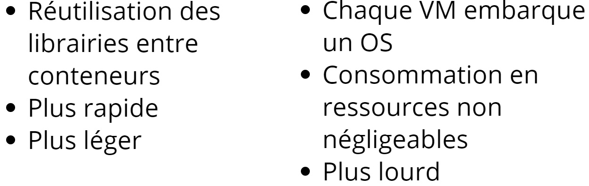
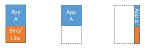
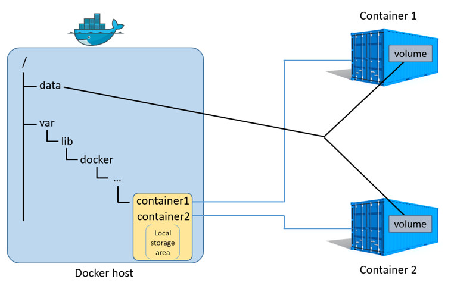

Docker
Pascal PELLET-DOYENJanvier 2018
Docker
Historique
Versioning & Éditions
Annee{2}.Mois{2}.Version-Edition{2}Entreprise Edition
- Version chaque trimestre - Support 1 année
Community Edition
- Stable : Version chaque trimestre - Support 4 mois
- Edge : Version chaque mois
Architecture

Images
- Un système d’image pour facilement transporter une application et ses dépendances :
un super « ZIP »
- Equivalence d’une classe en POO
Où les trouve-t-on ?
- Docker Hub : http://hub.docker.com
- Construire sa propre image
- Repository d'entreprise / personnel
Docker Hub
- Cloud repository
- Official repositories
Commandes « image »
C:\> docker image
Usage: docker image COMMAND
Manage images
Options:
Commands:
build Build an image from a Dockerfile
history Show the history of an image
load Load an image from a tar archive or STDIN
ls List images
pull Pull an image or a repository from a registry
push Push an image or a repository to a registry
rm Remove one or more images
save Save one or more images to a tar archive
...
Dockerfile
Fichier d’instructions pour la création d’image
Instructions
Spécifier l’image de base
FROM image:versionDéclarer des arguments avec possibilité de valeur par défaut
ARG name[=defaultValue]Exécuter une instruction
RUN commandExécuter commande au lancement du conteneur
CMD commandExemple : Extranet Server
# Utilisation d'une image comme couche de base
FROM php:7.0-apache
# Déclaration du répertoire de travail
WORKDIR /var/www/html
# Installation des dépendances nécessaires
RUN docker-php-ext-install mysqli
RUN docker-php-ext-enable mysqli
C:\Docker\ExtranetServer> docker image build -t extranetserver .
Sending build context to Docker daemon 3.735MB
Step 1/4 : FROM php:7.0-apache
---> c7db7ef72210
Step 2/4 : WORKDIR /var/www/html
---> Using cache
---> d17b85bc1264
Step 3/4 : RUN docker-php-ext-install mysqli
---> Using cache
---> 71169e546436
Step 4/4 : RUN docker-php-ext-enable mysqli
---> Using cache
---> 604672dcec23
Successfully built 604672dcec23
Successfully tagged extranetserver:latest
Conteneur
- Exécution d’une image (ubuntu, php, microsoft, etc.) avec ou sans paramètres
- Equivalence d’une instance en POO
Spécificités
- Partage l’OS de la machine hôte
- Isolé
- Autonome
- Ephémère /!\ stockage des données /!\
- Sauvegarde des modifications d’un conteneur
docker conteneur commit <nomDuConteneur> <nomImage[:TAG/VERSION]>Conteneur vs Machine Virt.


Conteneur : éphémère
Principe de couches

Conteneur : léger & rapide
Principe de couches

Machine hôte Unix
- Emulation de conteneur Unix Natif
- Emulation de conteneur Windows VM (à faire manuellement)
Machine hôte
Windows 10 /
Server 2016
- Emulation de conteneur Unix VM
- Emulation de conteneur Windows Natif
Machine hôte Windows 8 (et <)
- Emulation de conteneur Unix VM
- Emulation de conteneur Windows DockerToolbox (VM ?)
Commandes « container »
C:\> docker container
Usage: docker container COMMAND
Manage containers
Options:
Commands:
commit Create a new image from a container's changes
exec Run a command in a running container
run Run a command in a new container
stop Stop one or more running containers
...
Commande « container run »
docker container run <options> <image[:TAG]> [command]- options : différentes options pour configurer le conteneur
- image : nom de l’image à exécuter (tag : version spécifique)
- command : commande à exécuter une fois le conteneur UP
Example : Extranet Server
C:\Docker\ExtranetServer> docker run -p 9876:80 extranetserver
AH00558: apache2: Could not reliably determine the server's
fully qualified domain name, using 172.17.0.3.
Set the 'ServerName' directive globally to suppress message
AH00558: apache2: Could not reliably determine the server's
fully qualified domain name, using 172.17.0.3.
Set the 'ServerName' directive globally to suppress message
[mpm_prefork:notice] [pid 1]
AH001: Apache/2.4.10 (Debian) PHP/7.0.27
[core:notice] [pid 1] AH00094: Command line:
'apache2 -D FOREGROUND'
Volumes
Semblable à un « mount » ...
- Partage avec la machine hôte ( Host volume)
- En interne pour Docker ( Named volume)
- En interne pour le conteneur ( Anonymous volume)
Volumes
Utilité pour un Dev
- Hot replace
Utilité pour un Ops
- Environnement
- Données persistées, Logs
/!\ PRODUCTION /!\
- Une image doit embarquer un livrable (via COPY)
Volume partagé

Example : Extranet Server
C:\Docker\ExtranetServer>
docker run -v c:\Docker\ExtranetServer\src\:/var/www/html
-p 9876:80 extranetserver
[Fri Jan 26 10:28:52.9876 2018]
[mpm_prefork:notice] [pid 1] AH00163:
Apache/2.4.10 (Debian) PHP/7.0.27 configured operations
[core:notice] [pid 1] AH0094:
Command line: 'apache2 -D FOREGROUND'
Docker-Compose
Spécificités
- Simplifie la gestion d’une application multi-conteneurs
- Communique avec le démon docker
- Gère les images, les volumes, le nombre de conteneurs, les liens, ...
- Définition dans un seul fichier de plusieurs conteneurs
- docker-compose.yml
- format YAML /!\ espaces /!\
Example : Intranet (Front & Back)
version: '2'
services:
frontend:
image: php:7.0-apache
volumes:
- "./IntranetClient_Jordan/src/:/var/www/html"
ports:
- "8080:80"
backend:
image: extranetserver
volumes:
- "./ExtranetServer/src/:/var/www/html"
ports:
- "9876:80"
C:\Docker\DockerCompose\NouvelIntranet> docker-compose up
Starting both_frontend_1 ...
Starting both_frontend_1 ... done
Attaching to both_backend_1, both_frontend_1
backend_1 | [Fri Jan 26 10:52:38.699876 2018]
[mpm_prefork:notice] [pid 1] AH00163:
Apache/2.4.10 (Debian) PHP/7.0.27 configured
backend_1 | [Fri Jan 26 10:52:38.699911 2018]
[core:notice] [pid 1] AH00094:
Command line: 'apache2 -D FOREGROUND'
frontend_1 | [Fri Jan 26 10:52:38.890843 2018]
[mpm_prefork:notice] [pid 1] AH00163:
Apache/2.4.25 (Debian) PHP/7.2.1 configured
frontend_1 | [Fri Jan 26 10:52:38.891357 2018]
[pid 1] AH00094: Command line: 'apache2 -D FOREGROUND'
Orchestration
- Swarm ( Docker Inc)
- Kubernetes ( Google)
- Mesos ( Apache)
Spécificités
/!\ Nécessaire pour la PRODUCTION /!\
- Répartition de charges
- Scalabilité verticale et horizontale (manuelle / dynamique)
- Fail-over
- Gestion des noeuds, des données, des logs, etc.
Pour plus de détail, demander à Guiliano ;)
Anti-Pattern
Bonnes pratiques
- Similaire à l’agilité, s’adapte en fonction du besoin
- Il n’y a pas de manière exacte pour faire les choses !
MAIS plusieurs manières de mal faire les choses ! ! !
- Ne jamais utiliser le tag « latest »
- Ne jamais utiliser l’option « -P » pour lancer un conteneur
- Ne pas garder de données ou de logs sur les conteneurs
- Eviter le « docker commit »
- Un conteneur, plusieurs services
Conclusion
Mes expériences
La baleine et ses conteneurs dans l'océan déchainé
Questions / Réponses
Merci !